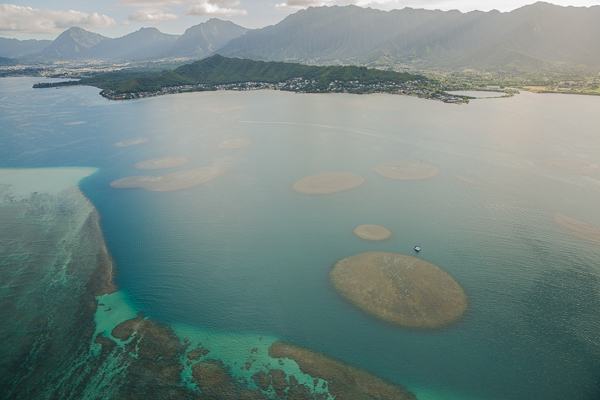

Surfing is my first love. I’m not a pro by any means, but being in the water calms my nerves and helps me appreciate my surroundings. There’s no better way to experience nature than being submerged in it!
But seeing that most of the country lacks ocean, my time in the water has taken a hit this year. Needless to say I’d been counting down the days to go to Hawaii. After all, it is the mecca of surfing.
Oahu’s North Shore is every surfer’s dream. Sitting in the middle of the Pacific, it almost always has a swell pulsing on its shoreline. Legendary surf spots like Pipeline, Waimea, and Sunset Beach all lie within just miles of each other.
But as any surfer knows, the forecast won’t be on the schedule as the trip you have planned. So as we were on the South Shore, the North Shore was teasing us with a nice mid-sized swell. Once we got up to the North Shore for the remainder of our stay, we caught the tail end of that swell, a lull, and then saw part of a giant swell that we wanted no part of.
Our first couple days surfing the North Shore were pretty great. Dad and I surfed a right point break right next to the hotel. I rented a 6’2” retro twin fish shaped by Mark Richards and had a blast drawing squiggly lines all over the head-high faces of the waves. But after a couple of surf days, the conditions stopped cooperating, giving us an opportunity to check out some of the other worthwhile activities on the island.
One day when the waves were too big for us to surf, they were just right for the pros. In fact, there was a contest being held at Sunset and we went down to check out a few heats. I got to see a couple of my favorite pros doing what they do best at an iconic spot. Watching Sonny Garcia, a Hawaiian favorite, win his heat was a moment I won’t forget.
Speaking of Hawaiian favorites, the newly crowned World Champion made his way back home. John John Florence recently won the well-deserved crown in Portugal and returned to a hometown parade on the North Shore. We, and a bajillion others, crowded the 2-lane highway to congratulate the champ and welcome him home.
One night, we ventured back down to Honolulu to catch Sting in concert. He may be 65 years old but the guy can still fill a stadium. An old dude singing Englishman in New York to an arena full of Hawaiians was a sight to see! From the very first note, he had the entire crowd captivated with oldies, Police hits, and new material. I hate to say it but my favorite song was Roxanne. In the middle of it, he transitioned from the straightforward rock song to a jazz swing, into a bluesy rendition of Ain’t No Sunshine by Bill Withers, and back into Roxanne, full steam ahead. They didn’t miss a beat.
With the waves still not cooperating, we had plenty of time to check out other parts of the island. A drive up the coast was the perfect escape to see one of the lesser populated areas of Oahu. We found plenty of scenic views and ropeswings overlooking them!
My favorite (non-surfing) activity we did was a helicopter tour over the island. Dad, Justin, and I squeezed into the helicopter with our pilot and took to the skies on our last afternoon in Hawaii while Mom headed to the spa. We flew with no doors making it a wee bit windy. Actually it was so windy that we had to talk through microphones. But there wasn’t a whole lot of talking going on, mostly just breathlessness!

We flew over our hotel, the Dole plantation, the valley where most of Jurassic Park was filmed, some places where Gilligan’s Island was filmed, a waterfall only viewable by helicopter, Pearl Harbor, and tons of surf breaks. I even saw a surfer get barreled at Pipeline as we returned to the helipad.
Not a bad way to end a family vacation, huh?!